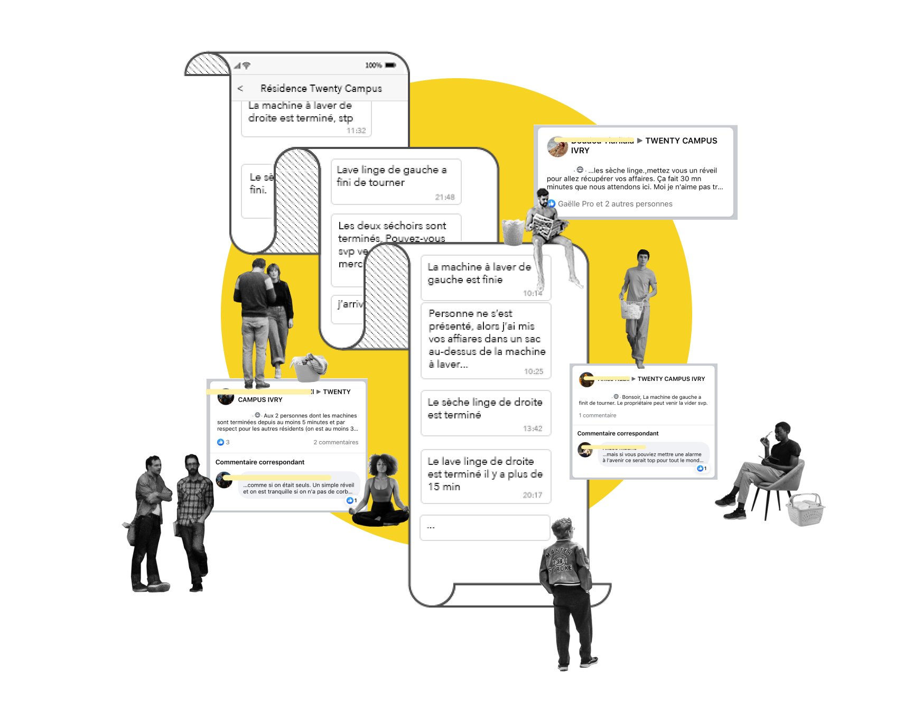
Un jour, je voulais faire laver mes affaires. J’allais à la laverie 3 fois, cependant, je n’arrivais pas à faire le lessive. Soit le lave-linge était en marche, soit il était terminé mais encore occupée. Cela m’énerve.
En fait, ce problème se produise régulièrement. J’ai constaté souvent que quelqu’un attendais devant le laverie résidentielle. Et puis, dans le groupe WhatsApp de mon résidence, tous les jours, il y a des messages rappelant les résidents de retirer leurs affaires lessivées.
C'est pourquoi une idée est née :
S'il existait un outil qui est capable de vérifier l’état de la machine chez nous au lieu d’aller à le laverie, il nous permet de gagner du temps et de diminuer le stress.
Assistante Lessive
Application mobile | UX/UI
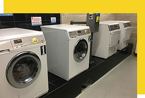
Cette application nous permet d’utiliser plus facilement les lave-linge ou les sèche-linge communs dans les logements Crous ou les résidences étudiants, en vérifiant si une machine est disponible et en réservant-la, sans aller à la laverie. Si les lave-linge publics sont actuellement occupées? Prenez la file d’attente virtuelle. Cette application vous informera dès qu’une machine sera disponible.
Grâce au capteur de pression et à la signalisation, la machine est capable de synchroniser son état avec notre smartphone. Il ne faut que la vérifier dans notre portable pour éviter d’y aller en vain.

Contexte
du projet
#1
Recherche
Des chiffres
Vu que 93% de foyers possèdent une machine à laver 1, et que le résidence étudiant n’installent que le laverie résidentielle, des sondés sont les habitants du résidence étudiant.
La machine n’est pas disponible quand vous allez à la laverie et voulez faire la lessive, y compris la machine en l’état travaillant et en l’état occupée.
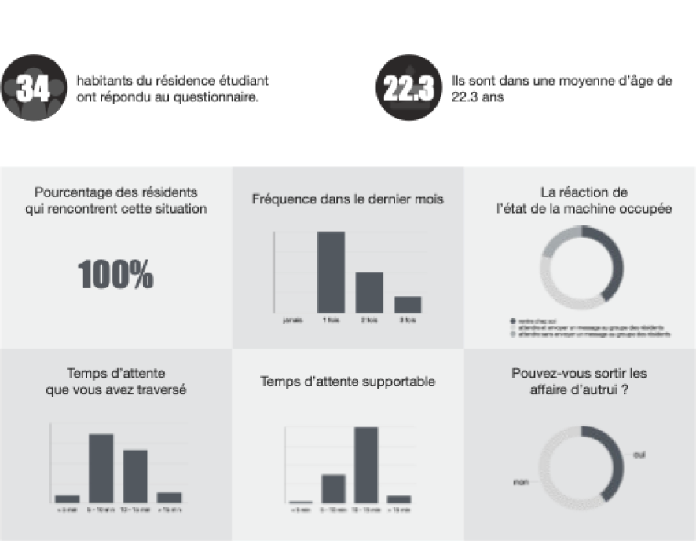
Problèmatique
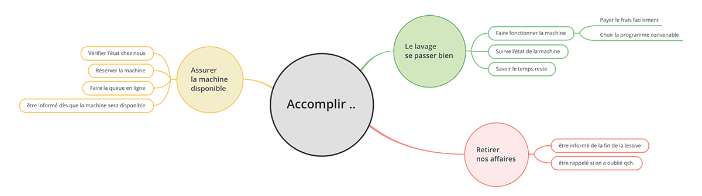
Axe
Avant la lessive
> vérifier l’état de la machine
> réservez la machine
> faire la queue
> informer la disponibilité de la machine
> faire le RDV ( des créneaux )
> envoyer un message à autrui
Pendant la lessive
> payer le frais
> savoir le temps reste
> conserver les préférences
> enregistrer les histoires de la lessive
Après la lessive
> savoir la fin de la lessive
> informer pour retirer les affairs
Positionnement
Persona
Bio
Anna a des cours chaque jour dans le week, et elle est très occupée. Elle fait la ménage le week-end.
Elle ne s’intéresse pas bien à partager les photos ou vidéos dans les réseaux sociaux, mail elle suite les comptes Instagram et Facebook de ses amis, et laisse parfois un commentaire ou un like.
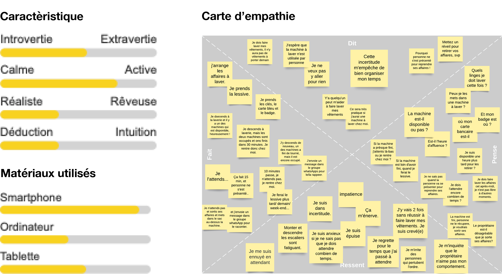
Sénario d'utilisateur
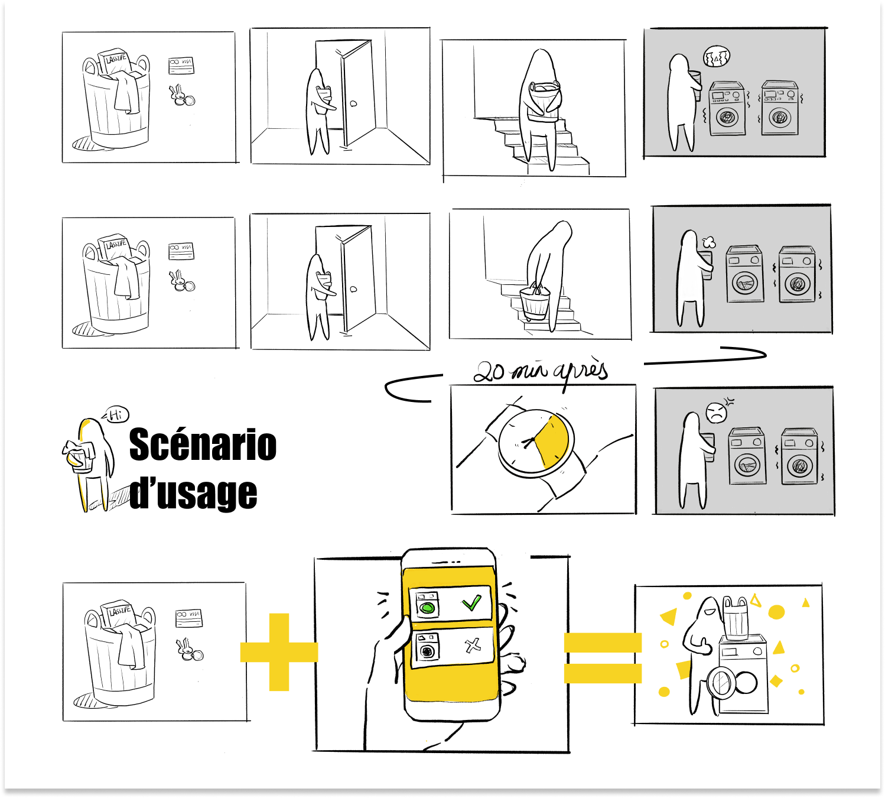
#2
Développe
ment
Parcours d’utilisateur
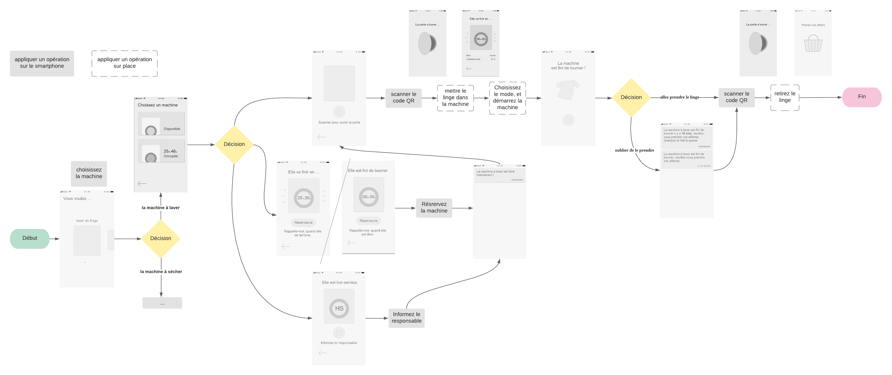
Approche technique
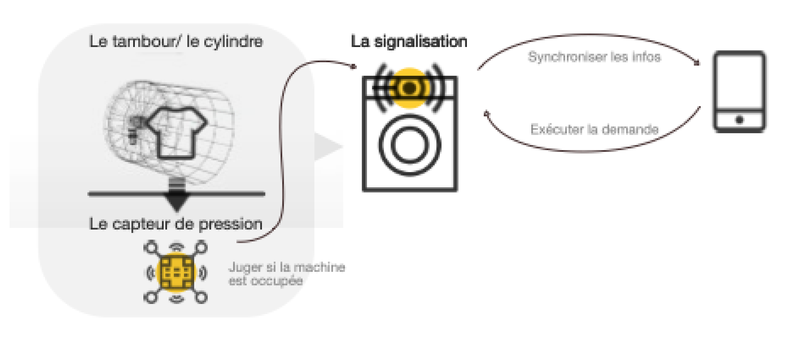
Fonction principale
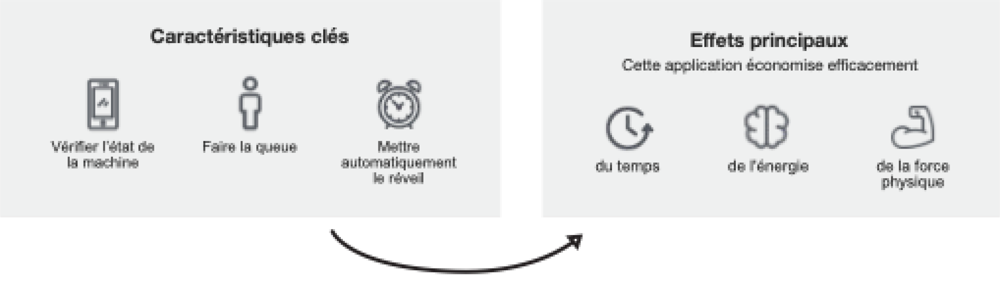
Fonction principale
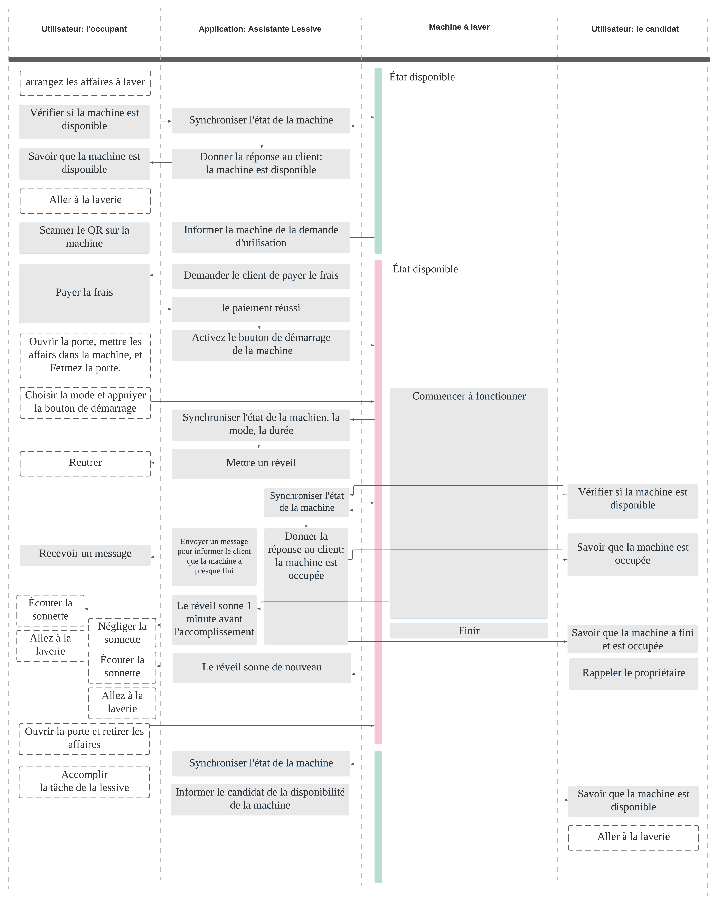
#3
Validation
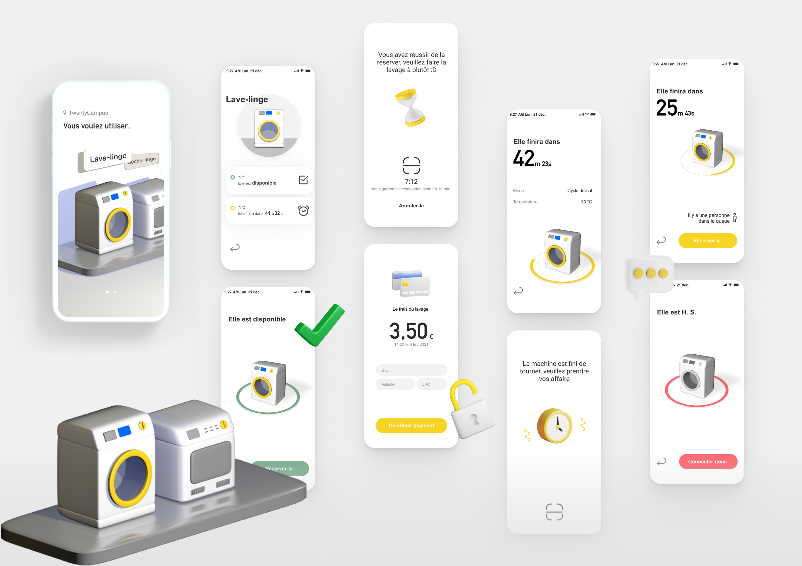